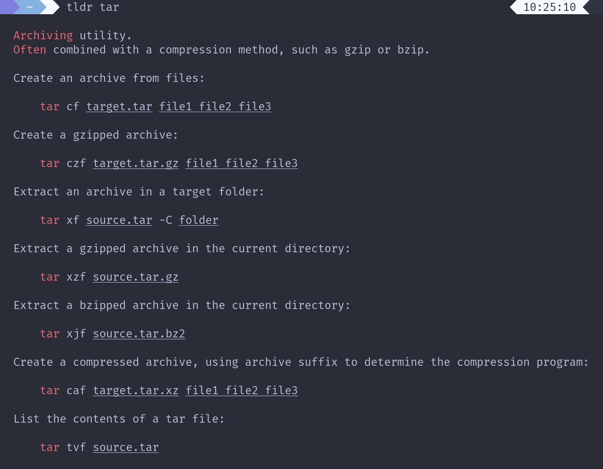

Tealdeer: Introduction
Tealdeer very fast implementation of tldr in Rust: Simplified, example based and community-driven man pages.

This documentation shows how to install, use and configure Tealdeer.
Links
Installing
There are a few different ways to install Tealdeer:
- Through package managers
- Through static binaries
- Through cargo install
- By building from source
Additionally, when not using system packages, you can manually install autocompletions.
Package Managers
Tealdeer has been added to a few package managers:
- Arch Linux:
tealdeer - Fedora:
tealdeer - FreeBSD:
sysutils/tealdeer - Funtoo:
app-misc/tealdeer - Homebrew:
tealdeer - NetBSD:
sysutils/tealdeer - Nix:
tealdeer - openSUSE:
tealdeer - Solus:
tealdeer - Void Linux:
tealdeer
Static Binaries (Linux)
Static binary builds (currently for Linux only) are available on the GitHub releases page. Simply download the binary for your platform and run it!
Through cargo install
Build and install the tool via cargo...
$ cargo install tealdeer
(Note: You might need to install OpenSSL development headers, otherwise you get
a "failed to run custom build command for openssl-sys" error message. The
package is called libssl-dev on Ubuntu.)
Build From Source
Debug build with logging enabled:
$ cargo build --features logging
Release build without logging:
$ cargo build --release
To enable the log output, set the RUST_LOG env variable:
$ export RUST_LOG=tldr=debug
Autocompletion
- Bash: copy
bash_tealdeerto/usr/share/bash-completion/completions/tldr - Fish: copy
fish_tealdeerto~/.config/fish/completions/tldr.fish - Zsh: copy
zsh_tealdeerto/usr/share/zsh/site-functions/_tldr
Usage
Tealdeer is straightforward to use, through the binary named tldr.
You can view the available options using tldr --help:
tealdeer 1.4.1
Danilo Bargen <mail@dbrgn.ch>, Niklas Mohrin <dev@niklasmohrin.de>
A fast TLDR client
USAGE:
tldr [OPTIONS] [COMMAND]...
ARGS:
<COMMAND>... The command to show (e.g. `tar` or `git log`)
OPTIONS:
-l, --list List all commands in the cache
-f, --render <FILE> Render a specific markdown file
-p, --platform <PLATFORM> Override the operating system [possible values: linux, osx, sunos,
windows]
-o, --os <OS> Deprecated alias of `platform` [possible values: linux, osx, sunos,
windows]
-L, --language <LANGUAGE> Override the language
-u, --update Update the local cache
-c, --clear-cache Clear the local cache
--pager Use a pager to page output
-r, --raw Display the raw markdown instead of rendering it
-q, --quiet Suppress informational messages
--show-paths Show file and directory paths used by tealdeer
--config-path Show config file path
--seed-config Create a basic config
--color <WHEN> Control whether to use color [possible values: always, auto, never]
-v, --version Print the version
-h, --help Print help information
To view the user documentation, please visit https://dbrgn.github.io/tealdeer/.
Configuration
Tealdeer can be customized with a config file called config.toml. Creating
the config file can be done manually or with the help of tldr:
$ tldr --seed-config
The configuration file path follows OS conventions. It can be queried with the following command:
$ tldr --show-paths
On Linux, this will usually be ~/.config/tealdeer/config.toml.
Override Config Directory
The directory where the configuration file resides may be overwritten by the
environment variable TEALDEER_CONFIG_DIR. Remember to use an absolute path.
Variable expansion will not be performed on the path.
Override Cache Directory
Similarly, the cache directory where the pages are downloaded to, also follows
OS conventions. On Linux, it will usually be at ~/.cache/tealdeer/. The path
can be overwritten using the environment variable TEALDEER_CACHE_DIR.
Remember to use an absolute path. Variable expansion will not be performed on
the path.
Config Example
[display]
compact = false
use_pager = true
[style.command_name]
foreground = "red"
[style.example_text]
foreground = "green"
[style.example_code]
foreground = "blue"
[style.example_variable]
foreground = "blue"
underline = true
[updates]
auto_update = true
display
In the display section you can configure the output format.
use_pager
Specifies whether the pager should be used by default or not (default false).
[display]
use_pager = true
When enabled, less -R is used as pager. To override the pager command used,
set the PAGER environment variable.
NOTE: This feature is not available on Windows.
compact
Set this to enforce more compact output, where empty lines are stripped out
(default false).
[display]
compact = true
style
Using the config file, the style (e.g. colors or underlines) can be customized.

Style Targets
description: The initial description textcommand_name: The command name as part of the example codeexample_text: The text that describes an exampleexample_code: The example itself (except thecommand_nameandexample_variable)example_variable: The variables in the example
Attributes
foreground(color string, ANSI code, or RGB, see below)background(color string, ANSI code, or RGB, see below)underline(trueorfalse)bold(trueorfalse)italic(trueorfalse)
Colors can be specified in one of three ways:
-
Color string (
black,red,green,yellow,blue,purple,cyan,white):Example:
foreground = "green" -
256 color ANSI code (Tealdeer v1.5.0+)
Example:
foreground = { ansi = 4 } -
24-bit RGB color (Tealdeer v1.5.0+)
Example:
background = { rgb = { r = 255, g = 255, b = 255 } }
updates
Automatic updates
tealdeer can refresh the cache automatically when it is outdated. This
behavior can be configured in the updates section and is disabled by
default.
auto_update
Specifies whether the auto-update feature should be enabled (defaults to
false).
[updates]
auto_update = true
auto_update_interval_hours
Duration, since the last cache update, after which the cache will be
refreshed (defaults to 720 hours). This parameter is ignored if auto_update
is set to false.
[updates]
auto_update = true
auto_update_interval_hours = 24